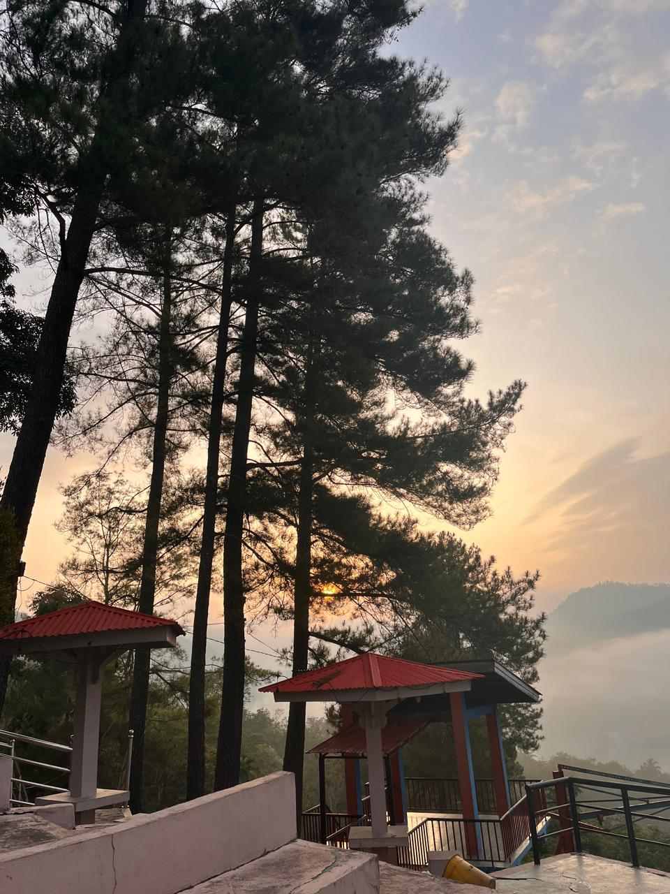
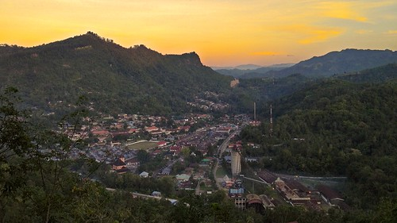

Puncak Cemara City View
Puncak Cemara adalah bukit dengan pemandangan kota Sawahlunto dari atas, sangat cantik saat matahari terbenam dan untuk foto panorama. Tempat ini menjadi salah satu spot favorit bagi wisatawan yang ingin menikmati keindahan Kota Sawahlunto dari ketinggian.
Dinamakan Puncak Cemara karena di area ini tumbuh banyak pohon cemara yang menambah keindahan panorama. Dari sini, pengunjung dapat melihat hamparan kota Sawahlunto, Danau Biru, serta perbukitan hijau yang mengelilingi kota.
Info Cepat
📍 Lokasi: Bukit Cemara, Sawahlunto
⏰ Waktu Terbaik: Sore (16.00-18.00)
🎫 HTM: Rp 5.000 - Rp 10.000
📸 Spot: Foto panorama & sunset
Keindahan & Daya Tarik

Golden Hour
Momen matahari terbenam yang memukau dengan warna jingga keemasan di atas kota Sawahlunto.

Panorama Kota
Pemandangan 360 derajat seluruh kota Sawahlunto, Danau Biru, dan perbukitan hijau.

Spot Foto
Berbagai spot foto instagramable dengan latar kota dan pepohonan cemara yang estetik.
Waktu Terbaik Berkunjung
Pagi Hari (06.00 - 08.00)
Udara segar, kabut tipis, dan suasana tenang. Cocok untuk meditasi atau foto dengan nuansa mistis.
Sore Hari (16.00 - 18.00)
Waktu terfavorit! Menikmati sunset dengan warna jingga keemasan di atas kota. Sangat recommended untuk fotografi.
Malam Hari (19.00 - 21.00)
Pemandangan lampu kota dari ketinggian. Romantis dan cocok untuk pasangan.
Tips Fotografi
- Lensa wide-angle untuk menangkap panorama luas.
- Datang 1 jam sebelum sunset untuk mendapatkan spot terbaik.
- Bawa tripod untuk foto malam atau long exposure.
- Pakaian warna cerah agar kontras dengan latar pemandangan.
- Cek cuaca sebelum berkunjung untuk hasil maksimal.
Golden hour terbaik terjadi 30 menit sebelum matahari terbenam.
Fasilitas di Puncak Cemara
Informasi Kunjungan
Harga Tiket Masuk
Weekday (Senin-Jumat) Rp 5.000/orang
Weekend & Libur Nasional Rp 10.000/orang
Parkir Motor Rp 2.000
Parkir Mobil Rp 5.000
Jam Operasional
Senin - Kamis 06.00 - 21.00 WIB
Jumat 06.00 - 21.00 WIB
Sabtu - Minggu 06.00 - 22.00 WIB
Libur Nasional 06.00 - 22.00 WIB
Lokasi & Rute Menuju Puncak Cemara
Alamat: Bukit Cemara, Kelurahan Pasar, Kecamatan Lembah Segar, Kota Sawahlunto, Sumatera Barat.
Jarak dari Pusat Kota: ± 3 km (15 menit perjalanan)